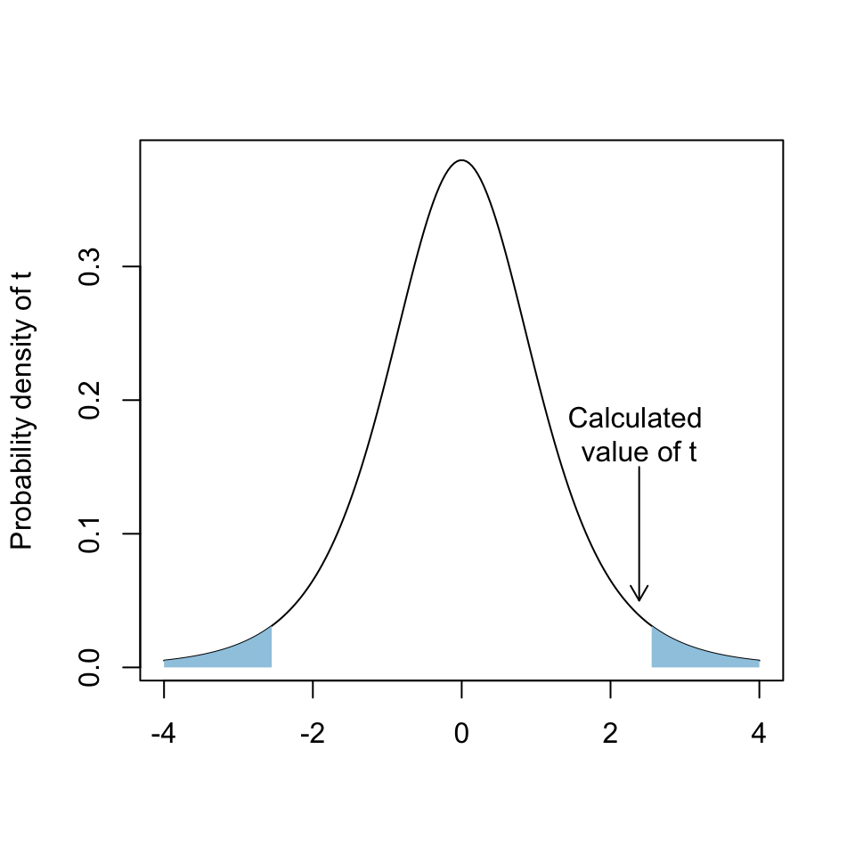
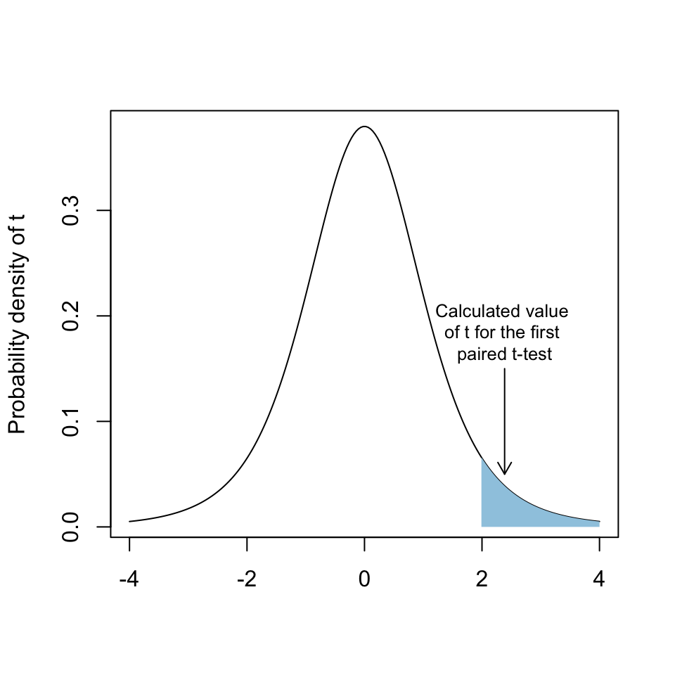

Paired t-tests explained
The paired t-test is a statistical hypothesis test which allows us to test for effects when data are paired: when measurements are taken before and then after some intervention or treatment, for example, or when pairs of individuals are used and one is given one treatment and one used as a control. The following video explains the basic concept behind a statistical test and how the paired t-test works.
Exercise: zombie ant graveyards and the problem of sampling error
Fungal parasites of insects are fascinating to biologists for many reasons, one of which is their tendency to control the behaviour of infected hosts. These fungi tend to kill those insects unfortunate enough to become infected, and they then produce infectious spores from the infected cadaver which are released into the environment. In many cases the dying insect’s behaviour is completely changed in ways that increase the probability that these infectious spores will contact a new host and transmit the infection.
One of the best known examples of such behavioural manipulation comes from a genus of fungus called Ophiocordyceps, which infects ants in tropical forests. The dying, infected ants (so-called “zombie ants”) climb up vegetation and then bite onto a leaf or a stalk. This means that the sporulating cadaver is firmly attached to the vegetation, and the height gained means that the infectious spores will rain down onto the ants foraging on the forest floor.

Figure 1: Ophiocordyceps infected ants. a) Recently dead infected ant (Camponotus rufipes) holding onto vegetation with its mandibles. b) Ant approximately a week after death with mandibles clasping a leaf. The structure emerging from behind its head (labelled st for stroma) is the developing fungal fruiting body. c) Ant between one and two weeks after death with a fully developed fruiting body labeled as for ascoma. Image from Andriolli, F.S., Ishikawa, N.K., Vargas-Isla, R., Cabral, T.S., de Bekker, C. & Baccaro, F.B. (2019) Do zombie ant fungi turn their hosts into light seekers? Behavioral ecology 30, 609–616.
How this behavioural manipulation works is still the subject of active research. One question that a group of scientists led by Fernando Andriolli1 investigated was the role of light: are the infected ants in fact moving towards the light when they climb upwards in the vegatation? To test this idea they identified a number of areas where infected ants are commonly found (known as ant “graveyards”) and they shaded half of each graveyard with creens which reduced the amouont of light. Each graveyard was monitored weekly for the appearance of new infected ants in both the shaded and unshaded areas for a period of six months. Whether the ants had fungal fruiting bodies present was also recorded. Here are the counts of infected ants and ants with fruiting bodies from each graveyard.
print(ant_data) graveyard treatment ants fruiting
1 1 control 57 19
2 2 control 9 3
3 3 control 3 1
4 4 control 27 12
5 5 control 2 1
6 6 control 11 5
7 1 shaded 34 8
8 2 shaded 7 2
9 3 shaded 3 0
10 4 shaded 9 6
11 5 shaded 0 0
12 6 shaded 0 0Let’s visualise these data to make it easier to spot any patterns. NB these figures are generated using a package called ggplot2, and another called cowplot to do the layout. The code is reproduced at the end of the tutorial if you are interested but it’s not important right now.

Figure 1. Numbers of infected ants (A) and numbers of cadavers with fruiting bodies (B) found in the shaded and control areas of the six ant “graveyards”. Lines connect values from the same graveyard. NB Larger data points indicate multiple data points plotted in the same place.
As you can see there is a lot of variability between the different graveyards, and also between the control and shaded locations. Just looking at the data, we can’t be confident of whether there is a difference between the control and shaded parts of each graveyard: there’s certainly a tendency for the shaded parts to have fewer ants and also fewer ants with fruiting bodies than the control parts but it’s difficult to be confident that this pattern has not arisen because of chance events during sampling.
Paired t-test for the ant data
To get some more insight into how confident we can be, we need to carry out a paired t-test. To emphasise where these numbers come from, we’ll start by calculating our test statistics from first principles, for the ant data only. As a reminder, the way that a statistical hypothesis test works is that we first calculate the effect, which in this case is the mean of the differences between the control and shaded plots (\(\bar{x}\)). We then transform the effect so that it can be compared with the distribution that we would expect to see if the null hypothesis (in this case, H0 is that there is no difference between the control and shaded areas) were true. To do this for a paired sample t-test we divide by the standard error, which is the standard deviation (\(s\)) divided by the square root of the sample size (\(n\)).
This gives us the formula for our test statistic, t:
\[ t = \frac{\bar{x}}{s / \sqrt{n}}. \]
Let’s calculate t. Remember the function to calculate a mean is mean() and for standard deviation it’s sd(). Here’s a code framework: see if you can fill in the parts marked with X to produce our test statistic.
# Calculate differences
diffs <- ant_data$ants[ant_data$treatment == "control"] -
ant_data$ants[ant_data$treatment == "shaded"]
# The mean of the differences
mean_diffs <- mean(X)
# The variance of the differences
sd_diffs <- X
# Now calculate t
X/(X/sqrt(X))# Calculate differences
diffs <- ant_data$ants[ant_data$treatment == "control"] -
ant_data$ants[ant_data$treatment == "shaded"]
# The mean of the differences
mean_diffs <- mean(diffs)
# The variance of the differences
sd_diffs <- sd(diffs)
# Now calculate t
mean_diffs/(sd_diffs/sqrt(6))Now that we know that our value of t is 2.385, we can ask how likely we would be to observe this value, or a greater value, if the null hypothesis were true. This is because we know the probability distribution of t given the null hypothesis. We can calculate this using the dt() function, plot it and then add in our value of t. Again, the code for this figure is reproduced at the end of the tutorial if you want to know how this figure was generated.

Figure 2. t-distribution on 5 degrees of freedom. The blue shaded areas indicate the area of the graph within which we would expect 5% of the values to be found: in other words, if we selected a value at random from the t-distribution it would be found in one of the shaded areas 5% of the time.
As you can see, our value of t is within the area of the curve where we would expect to find a value of t drawn from a random distribution 95% of the time. This suggests that if the null hypothesis were true, the probability of finding an effect as large as, or larger than, our observed one, is somewhat higher than 0.05. We can check this by calculating the exact probability of observing this using the pt() function. The R code to do this is a little obscure, so here it is. You just need to add the t-value you’ve calculated where it says X1 and the degrees of freedom (n-1) where it says X2.
2 * pt(X1, df = X2, lower.tail = FALSE)2 * pt(2.385, df = 5, lower.tail = FALSE)So the p-value for our paired-sample t-test is equal to 0.0627. This is slightly higher than the conventional cut-off for statistical significance of 0.05, telling us that we can have little confidence that the pattern we’ve observed is not simply a consequence of sampling error. In other words, the difference between the control and shaded plots is not statistically significant.
Paired t-test in R
In R we don’t have to go through this process every time we do a t-test. Instead we can use the t.test() function. You need to tell it the name of the data (ant_data$ants), a tilde ~ and then the name of the factor separating the data into groups (ant_data$treatment). You then need another argument which is paired = TRUE so that R knows to do a paired t-test.
# Make sure you have commas between all your arguments
# Make sure all your cases match: if you add or remove a
# capital letter R gets confused# Here's a code framework which you can edit
t.test(ant_data$VARIABLE1 ~ ant_data$VARIABLE2, paired = TRUE)# Here's the solution
t.test(ant_data$ants ~ ant_data$treatment, paired = TRUE)As an aside, for a paired t-test, R assumes that the values to be treated as paired are in numerical order, so the first value for the control treatment is paired with the first value for the shaded treatment and so on. This is the case for our data but if you are doing this on your own data it’s a good idea to check that this is indeed correct and if not to re-order your data.
This gives us quite a lot of information but if you look on the second row of the main block of output you can see the t-statistic, the df and the p-value, which should be the same as the values you calculated earlier. You also get a confidence interval, which is the confidence interval for the difference between means, and it also gives you the value of the mean difference between the values. You can see that the confidence interval for the difference between the means has a negative lower value and a positive higher value: in other words, our 95% confidence interval includes zero, which is another indicator that the difference between means is not statistically significant.
- Andriolli, F.S., Ishikawa, N.K., Vargas-Isla, R., Cabral, T.S., de Bekker, C. & Baccaro, F.B. (2019) Do zombie ant fungi turn their hosts into light seekers? Behavioral ecology 30, 609–616.
Paired t-test for the fruiting bodies
Now that we’ve worked through one example from first principles and then seen how to do it much quicker in R using t.test(), let’s look at the other response variable in the dataset, namely the numbers of ant cadavers in each area that developed fruiting bodies of the parastic fungus. These data can be seen in the left-hand panel of figure 1 on the previous page. Have a look and compare them to the data on the number of infected ants. Do you think there is more of a difference between the control and shaded treatments, or less of a difference, or is it difficult to tell?
Let’s do the same type of statistical test that we used before, but this time testing whether the mean difference in the numbers of ants with fruiting bodies is statistically significant. See if you can do a paired sample t-test on these data using t.test(), and then try to answer the questions. Remember that the variable for the count of cadavers with fruiting bodies in the ant_data data frame is called fruiting.
# You can just use the code from the last t-test
# and replace the "ants" variable with the "fruiting" one# Make sure you have commas between all your arguments
# Make sure all your cases match: if you add or remove a
# capital letter R gets confused# Here's a code framework which you can edit
t.test(ant_data$VARIABLE1 ~ ant_data$VARIABLE2, paired = TRUE)# Here's the solution
t.test(ant_data$fruiting ~ ant_data$treatment, paired = TRUE)One-tailed versus two tailed tests
If you were to look in the paper by Andriolli et al. which originally reported these data, you would find that their p-values are rather different from the ones we’ve calculated above. Whereas our analysis found that neither the overall number of ants (paired sample t-test, t = 2.39, 5df, p = 0.062) nor the number of ant cadavers with fruiting bodies (t = 2.54, 5df, p=0.052) differed significantly between the control and shaded areas, the paper by Andriolli et al reported that both were statistically significant with p-values of 0.031 and 0.026 respectively. How come?
Here’s the plot of the probability density of t with the test statistic indicated and the areas within which we would expect to find the most extreme 5% of values.

Figure 3. Probability density for the t distribution on 5 degrees of freedom. Blue shaded areas indicate the region within which the most extreme 5% of the values lie. The arrow indicates the value of t calculated for the first t-test, carried out on the data for the total number of ant cadavers found in the shaded and control areas. This value (2.385) is outside the area containing the most extreme 5% of values, indicating a non-significant result.
You can see that the areas highlighted correspond to both extreme positive and extreme negative values: in other words, this is a two-tailed test and we would record a significant result if our value of t had a sufficiently high positive value or a sufficiently low negative value. In the case of a t-test this means that we are not implying any directionality in our predictions, so we would record a significant result whether the effect was that group A had a higher mean than group B or a lower mean, so long as the difference was large enough.
What if we had a strong a priori hypothesis that an effect should be directional, so our prediction would be (for a t-test) that one group should have a larger mean than the other? In that case, for the conventional threshold of statistical significance of p=0.05 we could only consider the area under the curve containing the largest 5% of our values of t, as shown here.

Figure 4. Probability density for the t distribution on 5 degrees of freedom. The shaded area indicates the area containing the largest 5% of values. Note that the value of t calculated for the t-test on the total number of ant cadavers (2.385) is now within this region.
This is an example of what we would call a one-tailed test because we are only considering one tail of the t-distribution. Is this what accounts for the difference between our results and the published results?
Here is the code for the first t-test, on the total number of ant cadavers. Try to modify it to do a one-tailed test. We can do a one-tailed test by adding the argument alternative = "greater" to our t.test() function call (for the hypothesis that one mean is less than another we would use alternative = less).
t.test(ant_data$ants ~ ant_data$treatment, paired = TRUE)t.test(ant_data$ants ~ ant_data$treatment, paired = TRUE, alternative = "greater")Now do the same for the second t-test, on the numbers of cadavers with fruiting bodies.
t.test(ant_data$fruiting ~ ant_data$treatment, paired = TRUE)t.test(ant_data$fruiting ~ ant_data$treatment, paired = TRUE, alternative = "greater")Now we have replicated the analysis from the paper and the p-values are the same. Note that the values of t and the degrees of freedom are unchanged from our previous analyses: it is only the p-values and the confidence intervals for the difference that have changed.
Were the authors justified in using a one-tailed test in this study? You can make your own mind up on this matter. Most researchers are very cautious about using one tailed tests because they are less conservative (i.e. more likely to give a significant result) than two-tailed tests, and because of a general feeling in the community that people only use one-tailed tests to get significant results when their two-tailed tests don’t. As a rule of thumb, you should only use a one-tailed test when your hypothesis has a strong directional element and when your decision to use a one-tailed test was made before analysing your data. Ideally you should have some written record of this decision in case you are challenged on the matter later.
Code for figure 1.
# Load the two packages
library(ggplot2)
library(cowplot)
# Generate the first plot
p1 <- ggplot(data = ant_data, aes(x = treatment, y = ants)) +
geom_line(aes(x = treatment, y = ants, group = as.factor(graveyard)), colour = "grey70") +
geom_point(aes(colour = treatment), size = 3) +
labs(x = "Treatment", y = "Number of infected ants") +
theme_bw() + theme(legend.position="none")
# Generate the second plot
p2 <- ggplot(data = ant_data, aes(x = treatment, y = fruiting)) +
geom_line(aes(x = treatment, y = fruiting, group = as.factor(graveyard)), colour = "grey70") +
geom_point(aes(colour = treatment), size = 3) +
labs(x = "Treatment", y = "Number of ants with fruiting bodies") +
theme_bw() + theme(legend.position="none")
# Specify the layout and the labels
plot_grid(p1, p2, labels = c("A", "B"))Code for figure 2
# Set up dummy x-variable
X1 <- seq(-4, 4, length.out = 200)
# Calculate probability density of t for each value
Y1 <- dt(X1, df = 5)
# Draw curve
plot(Y1 ~ X1,
type = "l",
xlab = "",
ylab = "Probability density of t")
# Add arrow and text indicating the location of our test statistic
arrows(x0 = 2.385, y0 = 0.15, x1 = 2.385, y1 = 0.05, length = 0.1)
text(x = 2.385, y = 0.175, labels = "Calculated \nvalue of t", adj = 0.5)
# Draw in areas showing the upper and lower 2.5% quartiles
x0 <- min(which(X1 >= qt(0.001, 5)))
x1 <- min(which(X1 >= qt(0.025, 5)))
x4 <- max(which(X1 <= qt(0.975, 5)))
x5 <- max(which(X1 <= qt(0.999, 5)))
polygon(
x = c(X1[c(x0, x0:x1, x1)]),
y = c(0, Y1[x0:x1], 0),
col = "#9ecae1",
border = NA
)
polygon(
x = c(X1[c(x4, x4:x5, x5)]),
y = c(0, Y1[x4:x5], 0),
col = "#9ecae1",
border = NA
)